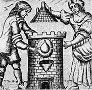
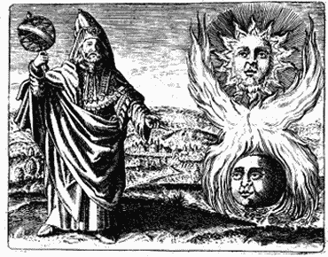

|
|
|
|  |
| El
athanor |
| |
 |
| El
aludel |
| |
 |
| El
crisol |
|
 |
| El sol y
la luna |
|
|
|
| 1- El laboratorio
o oficina |
|
|
| Los laboratorios
se escondían en las profundidades de las casas, ya fuera
en la buhardilla o en los sotanos para garantizar la
discreción de las operaciones que se efectuaban en los
mismos. Allí se podían encontrar un amplio horno, vasos, alambiques,
matraces, copelas, y crisoles.
|
|
|
| El
Athanor
Se trata del horno que permite separar
la materia de los elementos. De forma redonda, compuesta por
ladrillos suficientemente gruesos para conservar el
calor, es el receptáculo de diversas operaciones alquímicas.
Posee en su base el fogón, espíritu de la transformación,
luego la habitación que recibe sucesivamente el agua
y el aire que actúa como un disolvente. |
|
|
| El aludel
completa la instalación. Se compone de vasos
de tierra barnizados, encajados los unos en los otros
encima de los cuales está colocado una montera cuya
misión es recibir la materia que resulta de la
operación. El pelícano sirve de recipiente para la circulación
de líquidos. |
|
|
| La balanza
La alquimia es una historia de exactitud
y de perfección y la balanza aparece como un instrumento
esencial que puede medir de modo preciso las cantidades
para encontrar la armonía. |
|
|
| El crisol
La fusión de los metales se opera en vasos
a los que se ha dado el nombre de crisoles. Compuestos
de arcilla pura, están calentadas en los hornos de diversos
tipos según el grado de calor necesario para la
transformación deseada. El crisol es también llamado
matraz o huevo filosófico. Los textos herméticos utilizan
frecuentemente también los nombres de esfera, prisión,
frasco, sepulcro, matriz. |
|
|
| La elaboración
de la Gran Obra sólo es posible con el fuego.
Es por ello por lo que el fogón desempeña un papel determinante.
Los alquimistas utilizan tres tipos de colores: el fuego
húmedo o baño de maría, el fuego sobrenatural o
artificial obtenido añadiendo un ácido y el fuego natural.
|
|
| 2- El sol
y la luna |
|
| Zosime
de Panopolis, alquimista alejandrino, escribió en sus
Instrucciones a Eusebia, que "El gran Sol produce
la obra, ya que mediante él se realiza todo". |
|
| Asimilado
al Azufre rojo o determinando el punto central de la
obra, está representado por Helios u Osiris. Se
confundió rápidamente con Apolo aunque esta asociación
no se justifica desde un punto de vista hermético.
|
|
| El sol no
es un ingrediente propiamente dicho sino un principio
activo. Representa a Dios, al águila, al león, al ciervo
y por supuesto al oro, alquímicamente llamado el " Sol
de los metales ". Es el resultado de la Gran Obra,
la obtención del magnum opus simbolizado por el árbol
solar. |
|
| La luna también
es un principio importante aunque pasivo. Simboliza
el Mercurio. Es el resultado de la Pequeña Obra,
simbolizada por el árbol lunar. |
|
|  |
| El sol y
la luna |
|
| 3- Los
metales |
|
| A cada planeta
se asocia un metal según su color dominante. Son siete
y están clasificados de los más impuros a los más puros.
La transmutación debe pasar por estas etapas sucesivas
antes de alcanzar la perfección. |
|
|
| Plomo > Estaño > Cobre > Hierro
> Mercurio > Plata > Oro |
| |
(Pb) |
(St) |
(Cu) |
(Fe) |
(Hg) |
(Ag) |
(Au) |
|
|
|
|
| 4- Los
metales |
|
| Los alquimistas
utilizan los 4 elementos a fin de purificar la
materia. Se interactúan según su carácter común, como
por ejemplo la tierra seca con el fuego seco. |
|
| Simbólicamente hablando, se trata de separar el
alma del cuerpo y alcanzar a Dios. |
| |
|
|
 |
|
|
|